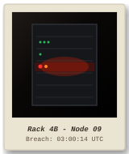

CASE FILE: OPERATION COLD BREACH
RECOVERED FORENSICS EVIDENCE // UNRESOLVED INCIDENT
ARCHIVE NO.
CASE-87-0300Z
| TIME (UTC) | SOURCE IP | METHOD / PROTOCOL | TARGET ENDPOINT / PATH | STATUS | BYTES | USER-AGENT / CLIENT | FORENSIC NOTE |
|---|---|---|---|---|---|---|---|
| 03:11:02 | 10.0.1.15 |
GET | /healthcheck |
200 | 24 | Internal Cloud Watcher | |
| 03:12:18 | 198.51.100.12 |
GET | /robots.txt |
200 | 145 | Known Search Indexer | |
| 03:13:45 | 192.0.2.45 |
GET | /admin/config.php?cmd=cat+/etc/passwd |
401 | 412 | Directory Traversal Probe | |
| 03:14:01 | 192.0.2.45 |
POST | /admin/config.php |
200 | 4820 | Unauthorized Admin Config Bypass | |
| 03:14:22 | 172.16.4.2 |
GET | /assets/main.css |
200 | 14200 | Office Subnet Staff | |
| 03:14:59 | 10.0.1.88 |
POST | /api/telemetry/heartbeat |
204 | 0 | Fleet Telemetry | |
| 03:15:10 | 203.0.113.88 |
GET | /index.html |
200 | 3520 | External Public Visitor | |
| 03:15:44 | 10.0.1.15 |
GET | /healthcheck |
200 | 24 | Internal Cloud Watcher |